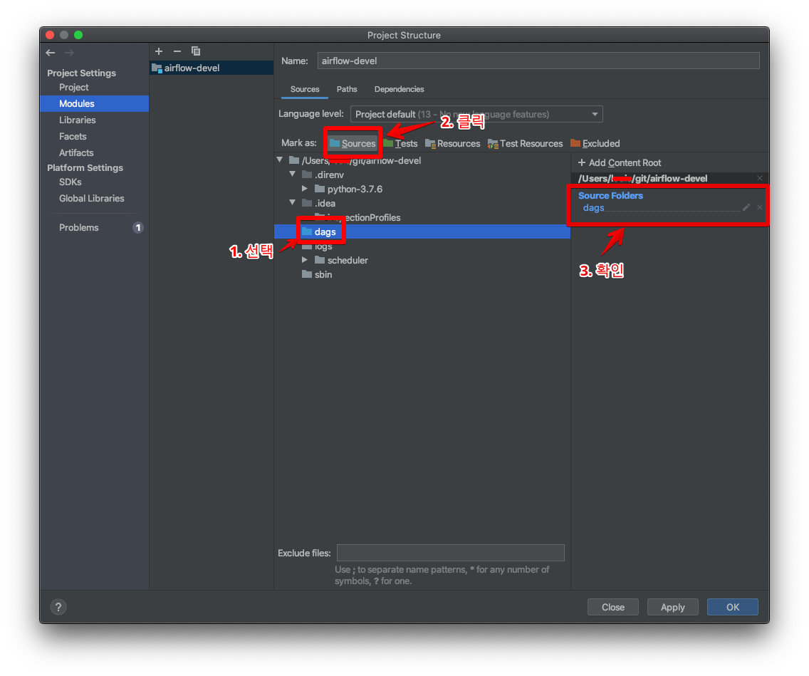
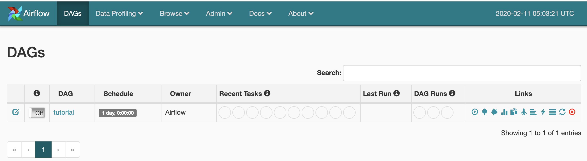

[Airflow] Local 개발환경 설정(2)_Dag 개발
앞서 Local 개발환경 설정(1)_설치를 통해 로컬에 Airflow를 설치를 해보았다.
이번에는 로컬에 설치된 Airflow를 이용하여 dag를 개발할 수 있는 환경을 만들어 보고자 한다.
개발 환경
- Mac OS(Catalina)
- Intellij
이전 포스팅에서도 이야기했듯, 2가지 git repository를 사용하는데
- airflow-devel repository : 로컬에 airflow 모듈을 설정
- airflow-dags repository : dag를 생성하고, 이를 통해 Production Level의 서버에 배포
하는 역할을 한다.
이 airflow-dags repository는 git submodule을 이용하여 로컬에 설치한 airflow-devel/dags로 추가한다.
1. git submodule을 이용하여 AIRFLOW_HOME/dags에 추가한다.
$ cd ${AIRFLOW_HOME}
## master브랜치를 dags라는 디렉토리로 submodule을 만든다.
## 각 환경에 맞는 dags Repository를 추가하자.
$ git submodule -b master add https://github.com/krespo/airflow-dags.git dags
2. Intellij에서 airflow-devel 프로젝트 설정
Intellij Menu -> File -> Open을 선택하여, airflow-devel 프로젝트를 선택한다. (airflow-devel/dags를 선택하는 것이 아니다)Command + ; 혹은 Project structure를 선택한다.- Python SDK 설정
- 좌측 Project -> Project SDK 에서 new(Python SDK) 선택
- Virtualenv Environment 선택
- Existing environment를 선택하고 Interpreter 부분에 airflow-devel/.direnv/python-3.7.6/bin/python 선택 후 저장
- 좌측 Modules를 눌러 dags 디렉토리를 Sources로 지정 
- Python SDK 설정
3. Dag 생성
dags 디렉토리에 테스트용 dag를 생성한다. 2번의 작업이 정상적으로 되었다면 아래의 소스코드에서 소스에러는 보이지 않을것이다. 만약 airflow 모듈을 찾지 못한다고 빨간줄이 생기면서 에러가 발생한다면 2번의 설정이 정상적인지 다시한번 확인한다.
from airflow import DAG
from airflow.operators.bash_operator import BashOperator
from datetime import datetime, timedelta
default_args = {
'owner': 'Airflow',
'depends_on_past': False,
'start_date': datetime(2015, 6, 1),
'email': ['airflow@example.com'],
'email_on_failure': False,
'email_on_retry': False,
'retries': 1,
'catchup': False,
'retry_delay': timedelta(minutes=5),
}
dag = DAG('tutorial', default_args=default_args, schedule_interval=timedelta(days=1))
# t1, t2 and t3 are examples of tasks created by instantiating operators
t1 = BashOperator(
task_id='print_date',
bash_command='date',
dag=dag)
t2 = BashOperator(
task_id='sleep',
bash_command='sleep 5',
retries=3,
dag=dag)
templated_command = """
{% for i in range(5) %}
echo "{{ ds }}"
echo "{{ macros.ds_add(ds, 7)}}"
echo "{{ params.my_param }}"
{% endfor %}
"""
t3 = BashOperator(
task_id='templated',
bash_command=templated_command,
params={'my_param': 'Parameter I passed in'},
dag=dag)
t1 >> t2 >> t3
4. Local에서 생성된 dag 실행
아래와 같은 명령어로 airflow를 로컬에서 실행시키자.
nohup airflow scheduler > /dev/null 2>&1 &
nohup airflow webserver > /dev/null 2>&1 &
http://localhost:8080 로 접속하여 방금 생성한 dag가 제대로 로드되고 실행되는지 체크한다.
아래 그림처럼 방금 생성한 tutorial dag가 화면에 보이면 정상이다. 
5. Production 환경의 airflow에 dag배포
필요한 dag를 모두 생성 완료했다면, submodule인 dags를 commit & push 한다.
그 후 Production Level의 airflow서버에 접속하여 airflow-dags repository를 1번 설정 설정과 동일하게 $AIRFLOW_HOME에 submodule로 생성하여 사용한다.
필자는 jenkins & github webhook을 통해 airflow-dags에 push가 발생하면 jenkins가 각 airflow 서버에 배포하도록 설정하였다.